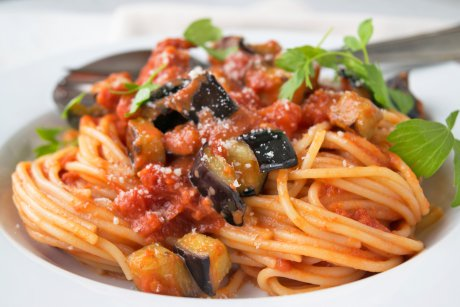

Spaghetti

Description
Spaghetti alla norma is a vegetarian dish which tastes wonderful for something so easy to make. It utilizes the flavors of the different ingredients which work very well together.
Ingredients
- 500g Spaghetti
- 2 Eggplants
- 1 handful of Basil
- 6 tbsp Oil
- 2 cloves of Garlic
- 4-6 Tomatoes
- 1-2 Onions
- Parmesan cheese
Steps
- Cut the onions, tomatoes, eggplant and garlic
- Fry the eggplant in oil until golden and let it dry
- Fry the onions until translucent
- Add tomatoes and garlic
- Let simmer for 15-20 min
- Cook spaghetti for 10-15 min in salty water
- Add a little spaghetti water to the sauce
- Add eggplant and basil
- Serve with grated parmesan cheese